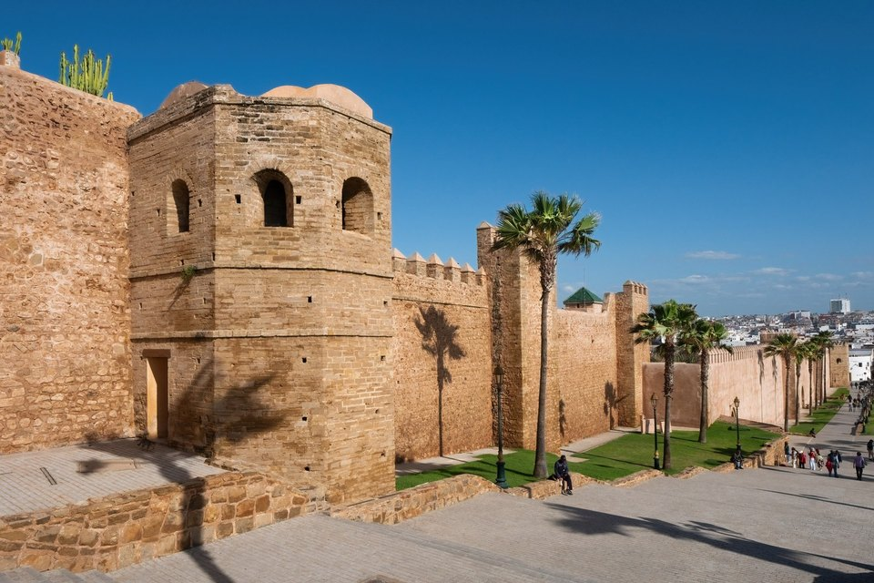

Morocco · Rabat
Kasbah of the Udayas audio guide
7 stops · 9 min · offline · plays as you arrive
This guide is Free in the app when it launches. Checkout is not open yet; this button is a placeholder. Email hello@getearwise.com.
A 7-stop offline audio guide to Kasbah of the Udayas in Rabat, recorded in 10 languages and designed to play as you arrive. It covers the Almohad main gate, Andalusian gardens, and blue-and-white lanes overlooking the Bou Regreg. Download once; you will not need a signal on the ground.
Stops
- 1
Bab Oudaia
On the slope outside the great gate, facing its carved facade. This is stop 1 on the route.
Play0:00 / –:–– - 2
Rue Jamaa
On Rue Jamaa, the Street of the Mosque, just inside the gate. This is stop 2 on the route.
Play0:00 / –:–– - 3
The Old Mosque
In the street outside the Old Mosque. This is stop 3 on the route.
Play0:00 / –:–– - 4
The signal platform
On the broad platform at the northern tip of the kasbah, above the sea wall. This is stop 4 on the route.
Play0:00 / –:–– - 5
The Andalusian Garden
Inside the walled garden, on one of the paths. This is stop 5 on the route.
Play0:00 / –:–– - 6
The palace of Moulay Ismail
Outside the former palace that houses the jewellery museum. This is stop 6 on the route.
Play0:00 / –:–– - 7
Café Maure
On the stepped terraces of the Café Maure, on the outer wall. This is stop 7 on the route.
Play0:00 / –:––
On the map
All 7 stop pins for this guide are marked. Open map